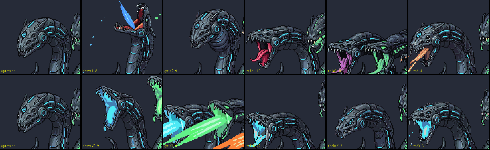

A Serpente de 3 cabeças: o corpo e a cor da primeira cabeça
31/10/2026 · segunda rodada das animações por habilidade · nada foi commitado.
Você:
- "quando eu falo do movimento sair do idle, me refiro a ter um movimento tambem corporal"
- "Existe discrepâncias na cor da primeira cabeça, cada animação deixa a cor diferente, verifique."
As duas coisas estavam certas e as duas eram minhas: no pedido ao gerador eu escrevia "o corpo enrolado fica parado", e não dizia de que cor é a boca de cada cabeça. Esta rodada refez as quatro animações com as duas correções.
1. A cor da primeira cabeça
O que mudava era a boca aberta, não as placas. Quase todos os pixels das animações já usam as 52 cores da arte aprovada. Mas, quando a boca abre, o gerador inventava o interior: vermelho numa, roxo em outra, rosa, laranja. E o cuspe da cabeça ciano saía laranja.
A correção: o pedido agora diz a cor de cada boca (ciano-azul na esquerda, verde no meio, laranja na direita). As três cabeças abrem a boca e cospem na cor do tiro delas, em todas as animações.

2. O corpo
Agora o corpo inteiro participa: as roscas apertam, o corpo abaixa, se ergue, se projeta e recua. Medido pela silhueta das roscas, a mudança passou de 0–2% para 6–20%. Todas saem da arte aprovada e voltam para ela, e nenhuma escurece o corpo no meio do caminho.
Os tiros normais (os três cuspes curtos, um depois do outro)


O cuspe quicante


A chuva


O raio com carga


No quadro do bote do cuspe e da chuva, o corpo muda muito de uma vez e o rastro aparece no mesmo quadro. É o golpe rápido, não uma falha; no resto, nenhuma animação tem salto.
3. Nas maquetes (velocidade real, na arena)
Agora cada projétil sai da boca onde ela está no quadro do golpe, porque com o corpo se mexendo a boca não está mais no lugar do idle. Os projéteis e o raio continuam desenhados de forma provisória.
4. O que eu descartei, e por quê
- Animações que escurecem o corpo: em algumas gerações, da metade em diante, as roscas caíam para 66–87% do brilho e ficavam assim. Na volta ao idle isso daria um piscar, o mesmo tipo de defeito de cor que você apontou. Tentei corrigir o brilho depois e ficou ruim (os contornos pretos viraram cinza, apareceram faixas), então a regra é: escureceu, descarta e gera de novo.
- Manchas cinza: o gerador pinta uma mancha cinza no buraco das roscas. Elas são apagadas em todas as animações; a cor delas é a de uma placa dela, então só some a mancha grande, e a placa fica.
- No total: das 23 gerações desta rodada, ficaram 7 (os três cuspes, o quicante, a chuva, o raio e o fechamento dele). As outras tinham a boca na cor errada, escureciam, quase não mexiam o corpo ou terminavam de boca aberta.
Para você decidir
- As quatro animações (os tiros, o cuspe, a chuva, o raio): o corpo e a cor estão como você quer?
- Os rastros que o gerador desenha (agora na cor de cada cabeça): ficam, ou eu limpo e deixo só o projétil do jogo?
- Como desviar do raio: um raio que varre a tela inteira não deixa lugar seguro. Na maquete, o lugar seguro é embaixo da mandíbula dela, perto do casco (chegar perto para escapar, bem Cuphead). Isso é uma proposta: ela fica, ou a gente decide isso na folha do visual do raio?
| Habilidade | Corpo (roscas) | Cor das bocas | Volta ao idle |
|---|---|---|---|
| Tiros normais | 6–9% | ciano · laranja · verde | sim |
| Cuspe quicante | 14% | as três | sim |
| Chuva | 15% | as três | sim (igual à aprovada) |
| Raio | 10% | ciano | sim (com o fechamento) |
Com isso aprovado, o próximo passo é o visual da bola e do raio, também numa folha, antes de levar tudo para o jogo.